Cabin East
Brand and merch · Wok | Steam | Draught · Betalbatim, Goa
The brand
Cabin East is a dim sum, bao and noodle bar with craft beer on tap, behind a red hoarding in Betalbatim. The logo is a pint glass holding a wok fire, a bamboo steamer and a dumpling: Wok, Steam, Draught in one picture.
Everything we print follows one idea: show the food, say something that makes the guest smile. Coasters, stickers and uniforms share the same hand-drawn dishes, the same five colours and the same two typefaces, defined below. Every piece gets its own line, never the same joke twice.
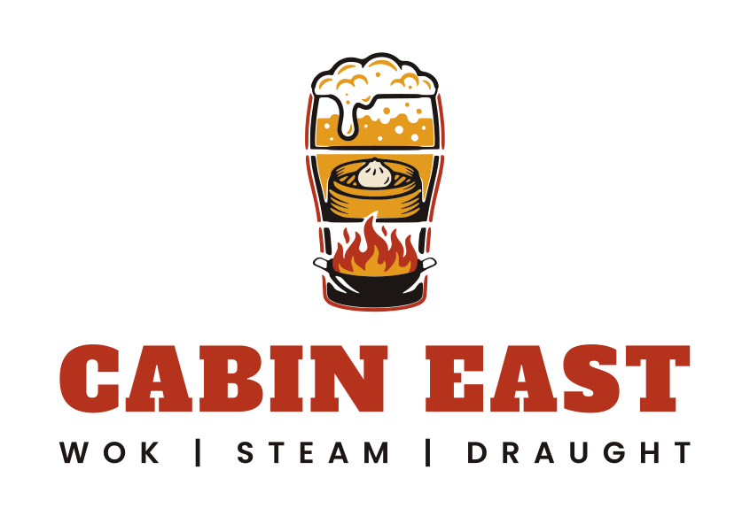
Logo
Six ready versions. Use the colour logo on cream, reversed on ink or red, and a one-colour version when the process allows only one ink or thread. Never redraw it: use the files.



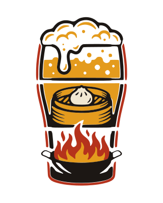

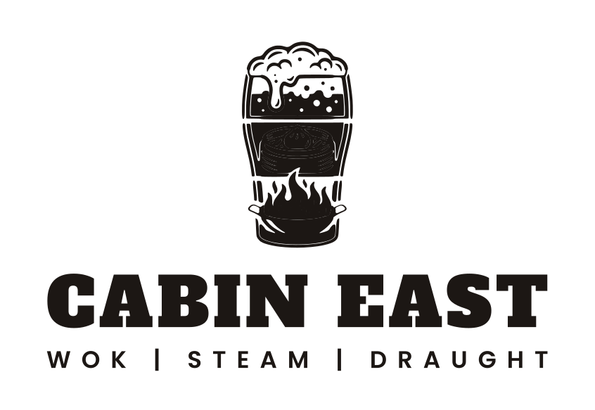


Space and size
- Clear space: keep a gap equal to the height of the dumpling on every side.
- Minimum size: stacked logo 22 mm wide in print, 90 px on screen. Below that, use the icon alone.
- Embroidery: logo 60 mm wide or more, icon 35 mm or more; the tagline is dropped under 80 mm.
- Use the supplied SVG, PDF or PNG.
- Reverse to cream on ink, red and kraft.
- Keep the wordmark flat, no shadow or outline.
- Stretch, rotate or recolour parts.
- Put the colour logo on red or ink.
- Set the name in another font.
Colour
Five colours. Cream does most of the work, red is the voice, ink holds everything together, amber and jade are seasoning. The bar shows the share of a typical piece.
#B5321CRGB 181 50 28CMYK ≈ 0 72 85 29
25% The wok fire. Wordmark, flame, big flat grounds, the colour people remember.
#1C1714RGB 28 23 20CMYK ≈ 0 18 29 89
20% Outlines, text, aprons and caps, night grounds. The strongest contrast we own.
#F2E8D2RGB 242 232 210CMYK ≈ 0 4 13 5
45% The default ground: paper, menus, boxes, lettering reversed out of red or ink.
#E49B1DRGB 228 155 29CMYK ≈ 0 32 87 11
7% Beer and light. Accents on ink or red, stitching, the dish-word on dark coasters. Never text on cream.
#2F6F57RGB 47 111 87CMYK ≈ 58 0 22 56
3% The steamer and the odd green ground. Sparingly: one in ten pieces at most.
Which pairs can carry text
Contrast ratios computed from the exact hex values; 4.5 : 1 or more is fine for body text.
| Pair | Contrast | Use |
|---|---|---|
| Aa Ink on cream | 14.6 : 1 | Body text |
| Aa Red on cream | 5.0 : 1 | Body text |
| Aa Cream on red | 5.0 : 1 | Body text |
| Aa Cream on ink | 14.6 : 1 | Body text |
| Aa Amber on ink | 7.6 : 1 | Body text |
| Aa Ink on amber | 7.6 : 1 | Body text |
| Aa Cream on jade | 4.9 : 1 | Body text |
| Aa Amber on red | 2.6 : 1 | Do not use for text |
| Aa Amber on cream | 1.9 : 1 | Do not use for text |
CMYK values are straight conversions from RGB. Press and cloth shift colours, so proof the red and the amber on the real stock and thread before a full run. Natural kraft is a material, not a brand colour.
Typefaces
Two typefaces, both free to use in print, embroidery and signage (SIL Open Font Licence). The logo lettering is already converted to outlines, so you only need the fonts to type new text.
Alfa Slab One
Poppins SemiBold
Poppins Regular
Hand-folded dim sum, soft bao and craft beer on tap. Open for lunch and dinner, happy hour 12 to 6.
How we set type
- Headlines and dish names: Alfa Slab One, capitals on merch, letter-spacing +3%.
- Small lines: Poppins SemiBold, capitals, letter-spacing +14% to +26%.
- Body: Poppins Regular, 16 px or 10 pt, line height 1.6.
- Never set long text in Alfa Slab One.
Fallbacks and files
- No web font available: Arial Black for display, Arial for body.
- Print minimums: Alfa 8 pt, Poppins 6.5 pt; embroidery letters at least 6 mm tall.
- Font files: Alfa Slab One, Poppins SemiBold, Poppins Regular.
Voice
Friendly, funny, never rude. We name dishes with puns, then say something a guest will repeat to their friends.
Eight ways to be quirky
- The dish pun: Bao Down. Gose Bumps. Prawn to Be Wild.
- The dare: Noodle around and find out.
- The brag: Wings with K-Pop energy.
- The confession: Day-old rice, brand-new love.
- The instruction: Slurp responsibly. Eat me first.
- The warning: Careful, it’s delicious.
- The drama: Your pint called. It’s sweating.
- The wink: No peeking. No nibbling.
Rules of the voice
- Short and warm, like a waiter who likes you. Seven words or fewer.
- One joke per piece, and never the same joke twice.
- If it can be a menu name, use the menu name: Bao Down, Noodle Around, Wonton More.
- Joke about the food and ourselves, never about the guest.
- Happy hour is 12 to 6, everywhere.
Every line in the range
| Piece | Line | Style |
|---|---|---|
| Coaster, bao | Pull up a bun. Bao Down. | Pun |
| Coaster, dim sum | Good things come in steamers. | Brag |
| Coaster, noodles | Noodle around and find out. | Dare |
| Coaster, fried rice | Day-old rice, brand-new love. | Confession |
| Coaster, wings | Wings with K-Pop energy. | Brag |
| Coaster, beer | One sip and you’ll get Gose Bumps. | Pun |
| Coaster, ice cream | Two scoops. No regrets. Dessert. | Wink |
| Coaster reverses | Your pint called. It’s sweating. / Doodle here. We won’t tell. / Wipe up. Wok on. / Another round? Wonton More. | Drama, wink, pun |
| Stickers | Bao-dy care · Steam team · Slurp responsibly · Rice & shine · Wing man · Eat me first · Pour decisions · Still sizzling | Instruction, pun |
| Seal strip | No peeking. No nibbling. | Wink |
| Carry bags | Careful, it’s delicious. / Dinner is sorted. | Warning, brag |
| Noodle pail | Slurp now, thank me later. | Instruction |
| Dim sum box | Handle with bao-dy care. | Pun |
| Chopstick sleeve | Chop chop. | Instruction |
| Napkin | Wonton More? Messy means it was good. | Pun, wink |
| Server tee | Ask me about the bao. It’s a vibe. | Dare |
| Kitchen tee | Prawn to Be Wild. | Pun |
| Bar tee | Pour decisions. No regrets. | Pun |
Coasters
Seven dishes, seven colours, seven different jokes. Each coaster is a hand-drawn dish on a plate with a small line curved above and a big one below. Four cheeky reverses carry the logo. Round, 100 mm.
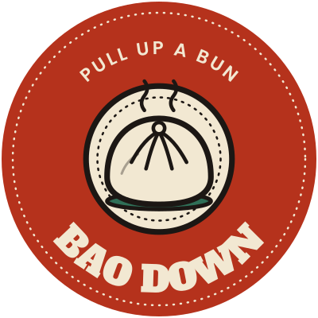

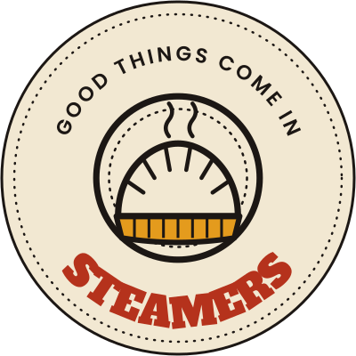

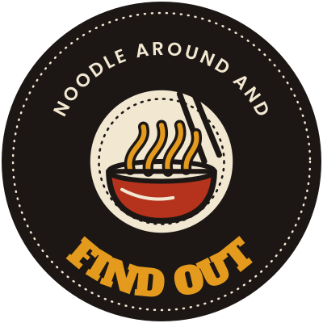

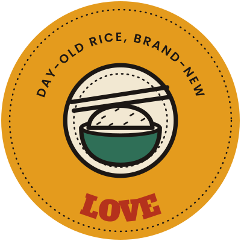

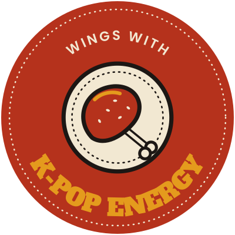

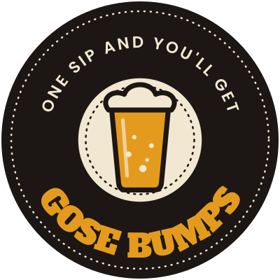

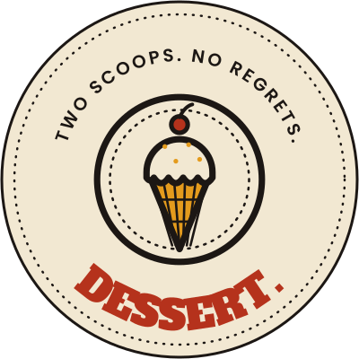

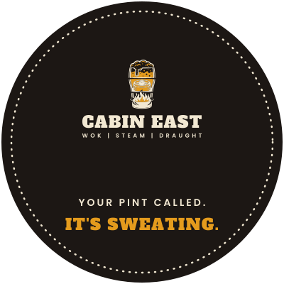

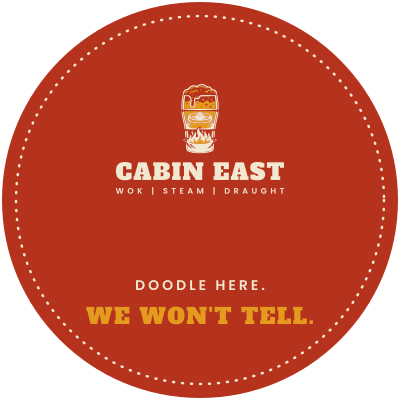

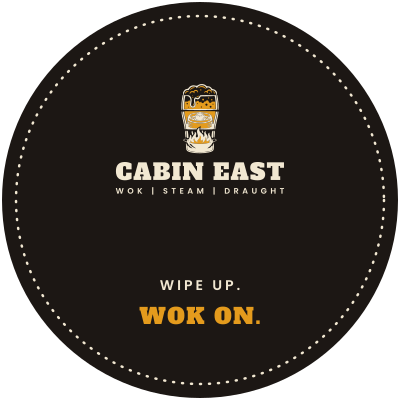

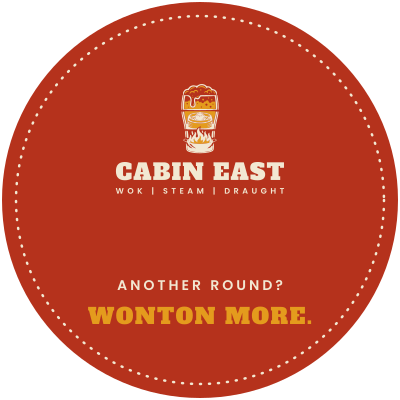

Takeaway stickers and bags
Stickers
A scalloped seal for every kind of bag, 55 mm: a different punchline for each dish, a “still sizzling” seal for anything hot, and a tamper strip that closes boxes and bags.
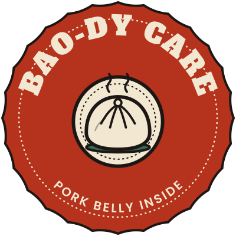

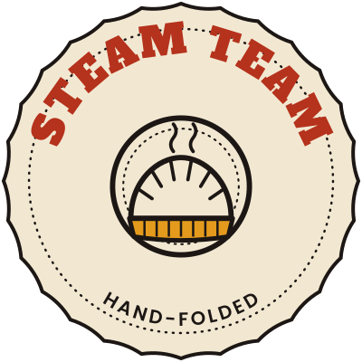

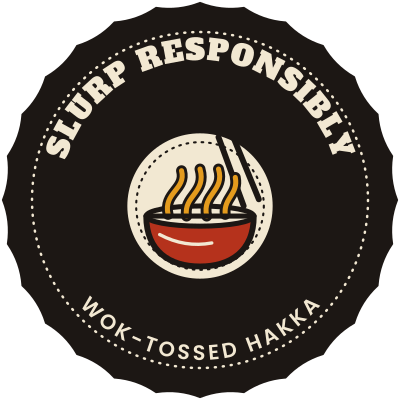

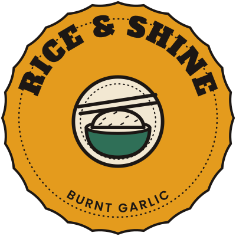

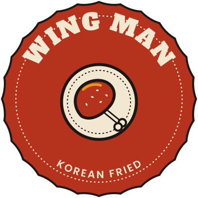

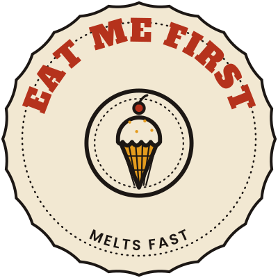

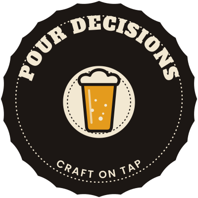

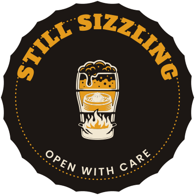

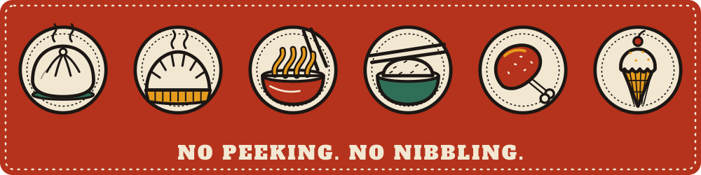

Bags, boxes and table paper
Same dishes, same colours. Red bags for sign-recognition on the street, kraft for the low-ink option.
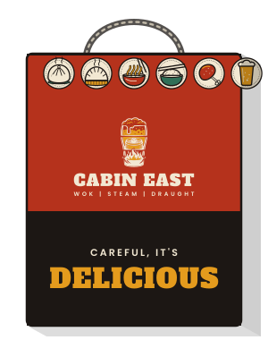

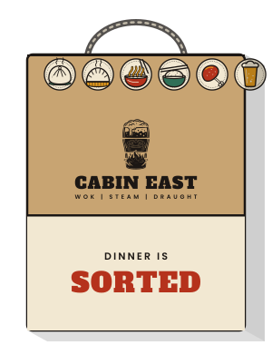

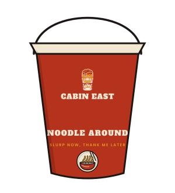

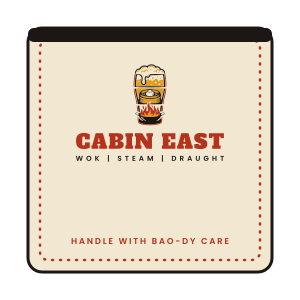

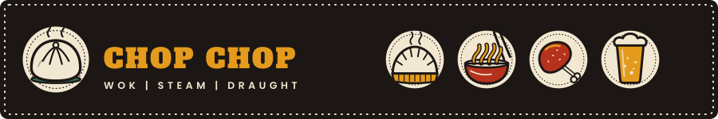

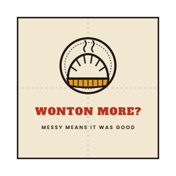

Staff merchandise
Three crews, one look. The shirt colour tells guests who is who; the logo and the dish puns do the branding. Cream is for the heat of the kitchen, red for the floor, ink for the bar.
Servers
Front of houseInk tee, red half apron, ink cap, name badge. The back says “Ask me about the bao”, so guests start the conversation for you.
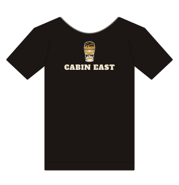

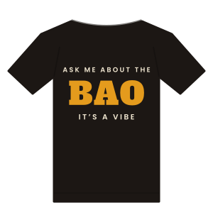

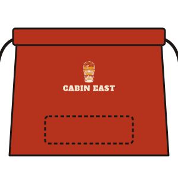

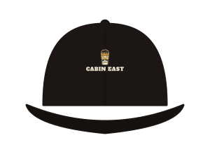

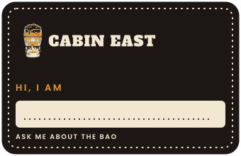

Kitchen
Wok and steam crewCream chef coat, red crew tee, ink bib apron, red dish-pattern bandana. Dark aprons hide the stains, the cream coat signals clean.
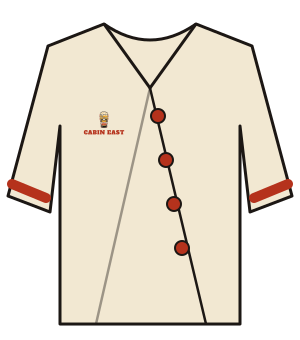

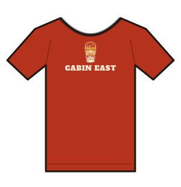

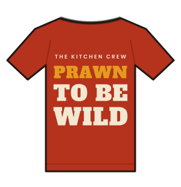

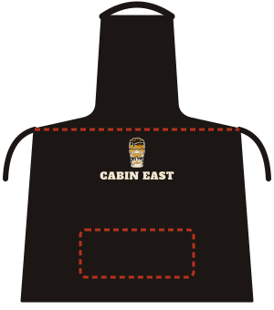

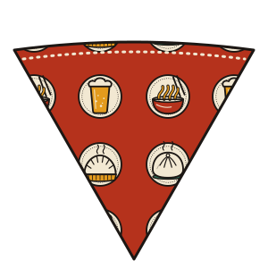

Bartenders
Draught crewInk waxed-canvas apron with amber stitching, cream tee, red cap. The back reads “Pour decisions”; “Gose Bumps” goes on the apron pocket patch.


Production sheet
What to ask a printer or tailor for. Sizes, materials and methods are suggestions to start the quotes with; confirm each with the supplier and approve a sample before a full order.
| Item | Size | Material | Method | Versions |
|---|---|---|---|---|
| Coaster | 100 mm round | 1.5 to 2 mm pulp board, matte | 4-colour or 3 spot colours | 7 fronts + 4 reverses |
| Takeaway sticker | 55 mm scalloped circle | Matte paper or vinyl, die-cut, peelable | Spot or 4-colour | 7 dishes + hot |
| Seal strip | 100 × 25 mm | Tamper-evident paper label | Spot red and cream | One design |
| Carry bag | 240 × 120 × 300 mm | Kraft paper, twisted-rope handle (red bag: printed solid red) | Flexo, 1 to 2 colours | Red + kraft |
| Noodle pail | 16 oz oyster-pail style | Printed paperboard, wire handle | 4-colour or spot | Red |
| Dim sum box | 200 mm square clamshell | Natural or white board | 1 to 2 colours | Cream |
| Chopstick sleeve | 210 × 35 mm | Paper band | 2 colours on ink | One design |
| Napkin | 240 mm square, folded | Quality paper napkin, 2 ply | 1 to 2 colours | One design |
| Tee | Unisex + women’s cut | Heavy cotton, 180 to 200 gsm | Screen print, plastisol. Embroider the cap | Ink, red, cream |
| Apron (bib and half) | One size, adjustable neck | Cotton drill or waxed canvas, tan leather straps for the bar | Embroidered logo, stitched pocket | Ink, red |
| Chef coat | Unisex | Light cotton blend, double-breasted, knot buttons | Embroidered left chest | Cream |
| Cap | Adjustable five-panel | Cotton twill | Flat embroidery of the icon | Ink, red |
| Bandana | 550 mm square | Cotton | Screen print, one colour | Red |
| Name badge | 85 × 55 mm | Printed acrylic or metal, magnetic fixing | Digital print | Ink |
Hand-off checklist
- Send the SVG (or PDF) for each piece from Files. All lettering is outlined, nothing needs the fonts.
- Give the printer the five hex values and ask for a colour proof on the real stock; red and amber move the most.
- Embroiderers need the logo digitised from the one-colour file; ask for a sew-out sample before approving.
- Use the “sealed” strip and the hot sticker on every takeaway order, not just some.
Files
Print-ready vector artwork for every piece on this page (lettering outlined), plus the logo and fonts.


Every “SVG” button above downloads that artwork on its own.